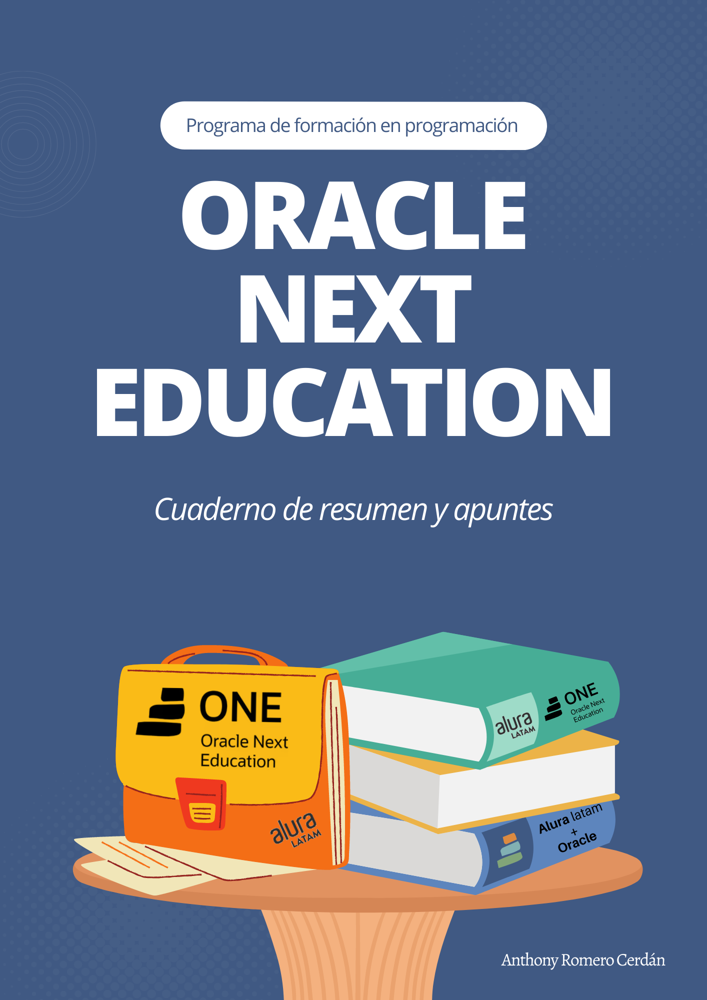

ONE
Cuaderno de apuntes
 *Cuaderno de apuntes*" class="quarto-cover-image img-fluid">
Bienvenido/a!
Esta es la website de “ORACLE NEXT EDUCATION Cuaderno de resumen y apuntes” un libro work-in-progress en versión web. Este pequeño, pero amigable, documento será mi bitácora a lo largo del programa ofrecido por Oracle y Alura latam enfocado en desarrollo de habilidades en programación. Este programa es gratuito, sin embargo, hay un proceso de selección previo para poder formar parte y obtener acceso a la batería de cursos que ofrecen. Tuve la grandiosa oportunidad de ser seleccionado en el programa, así que aquí encontrarás un alcance sobre mi avance…quizá te sirva como guía para aprender o reforzar algún concepto ;).
Este libro es desarrollado con R, Quarto y el paquete Bookdown. Puedes encontrar el código fuente en mi perfil de github. Además, es de libre acceso… y siempre lo será :D
“ORACLE NEXT EDUCATION Cuaderno de resumen y apuntes” utiliza un Código de conducta del contribuidor estándar. Si deseas contribuir con este libro, estás aceptando cumplir con sus términos.
Reconocimientos
Agradecimiento especial al equipo de Oracle y Alura latam por permitirme ser parte de este programa y por las herramientas brindadas durante el mismo.
“ORACLE NEXT EDUCATION Cuaderno de resumen y apuntes” está alojado por https://www.netlify.com como parte de su apoyo a las comunidades y el software de código abierto.
Descargo
Esta publicación tiene como única finalidad compartir el conocimiento obtenido a partir del programa ONE de Oracle y Alura latam y no pretender apropiarse del material y autoría respectivos. Mi único fin es compartir información útil :)